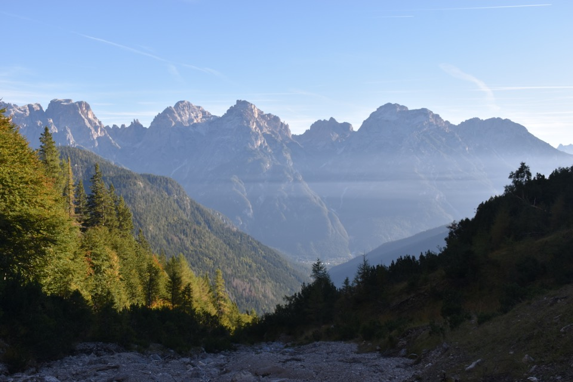
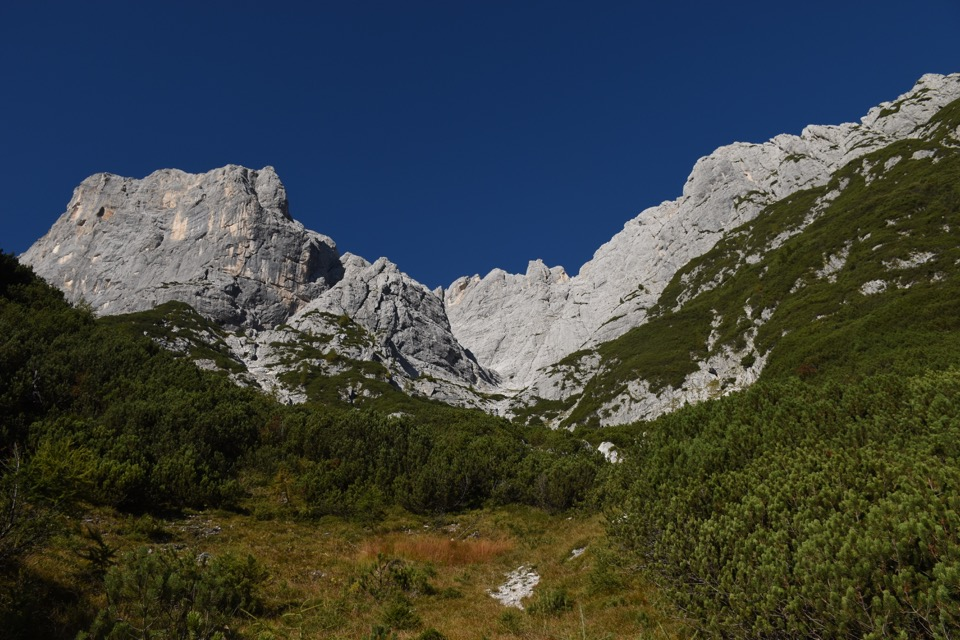
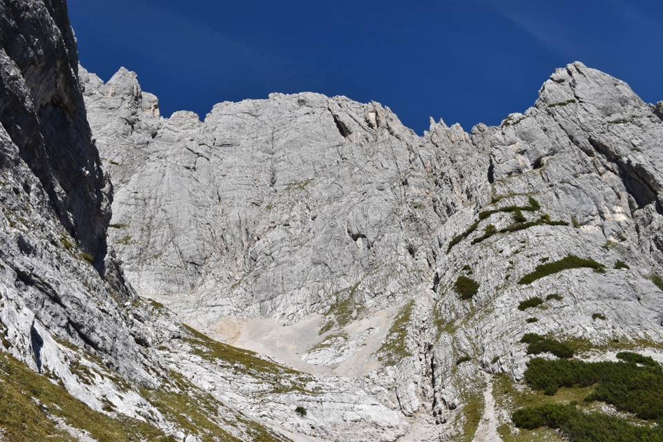
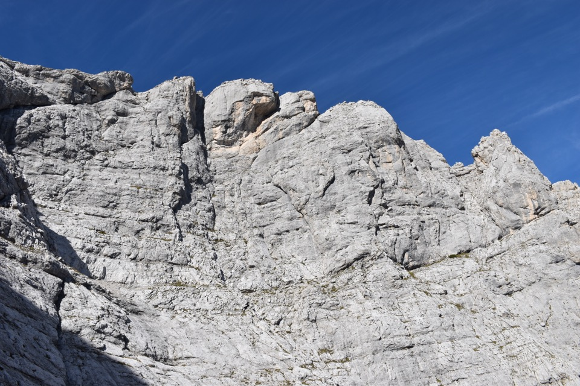
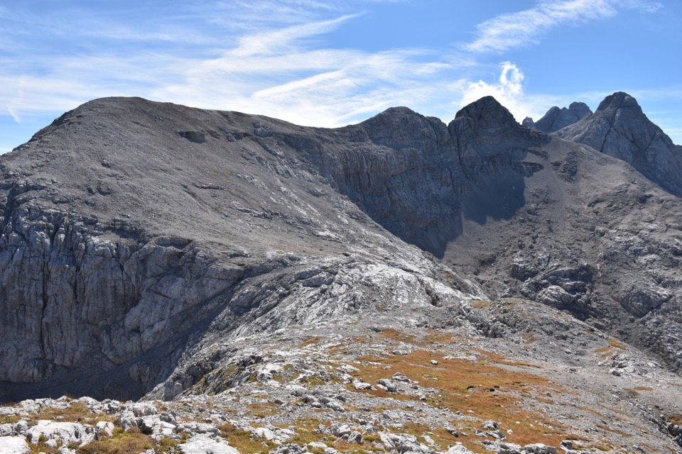

Partiamo all'alba sotto le grandiose crode che incombono sulla Val da Rin.
La Croda Bianca.
Possente appare il nostro obiettivo: la Spalla dell'Arbel.
Punta Teresa a sx e Sella Est.
In un paio d'ore arriviamo al bellissimo catino nascosto del Col Baion.
Lassú imponente si erge la nostra croda.
Strane foschie verso il fondovalle auronziano.
Il grandioso vallone dell'Arbel.
Passaggi impegnativi per evitare i salti.
Sotto le belle pareti della Croda Baion...
...che però non è proprio semplice da salire!
In centro la forcella che fa capo al vallone; a sx la Spalla dell'Arbel, quasi collegata con la Croda dell'Arbel, piú a dx. Tutto a dx la Sella Ovest, con un pezzetto del Cimon del Froppa.
Verso la val d'Ansiei; sotto di noi precipita impressionante il mitico Vallon dei Camosci.
Cima dei Camosci e Croda di Somprade.
Impressionante il Vallon dei Camosci.
La grandiosa bellezza delle Dolomiti di Sesto: Croda dei Toni, Cima Undici e monti Giralba.
Guardo Greta sulla Cima Ovest.
Verso la val Baion e il Ciastelin.
Sbuca il Cimon del Froppa dietro alla «sella per antonomasia».
La Val da Rin dove siamo partiti.
Auronzo con le sue crode: val Giralba a sx e val d'Ambata a dx.
Cima Bagni e Croda di Ligonto, col mitico Cadin del Biso, luoghi stupendi e a me cari.
Le cime Pezzios evidenziate dai giochi di luce.
Il Ciastelin che fin'ora non avevo mai degnato di uno sguardo: mi sovvengono le crode del Comelico, ad es. il Pupera Valgrande da Nord.